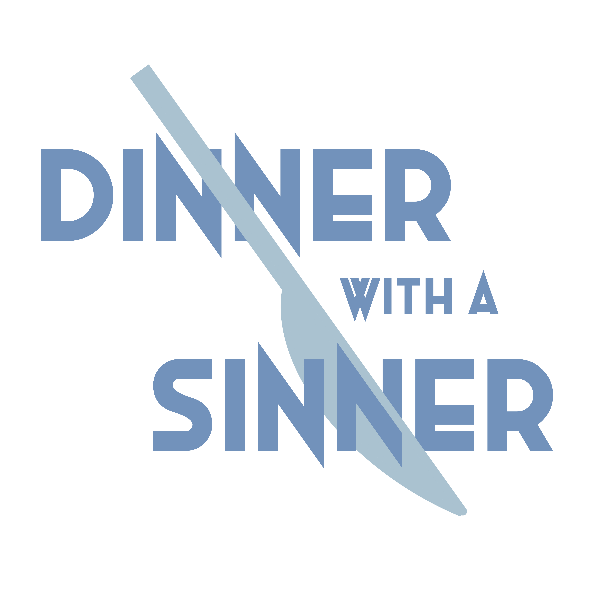

itch.io page
Dinner With A Sinner
Final draft submitted April 30th, 2023
This is a Print & Play, murder-mystery board game for 3-6 players. Players must try to figure out who the murderer is by figuring out evidence.
This was a collaborative project with one other person.
My role: Concept Design (collaborative), Game Art

Curiousity Killed?
Final draft submitted March 15th, 2023
This is a Print & Play, supernatural, adventure RPG. You create your own unique story by rolling the dice and moving your stats.
My role: This was a solo project. I designed the game and created the art for this.